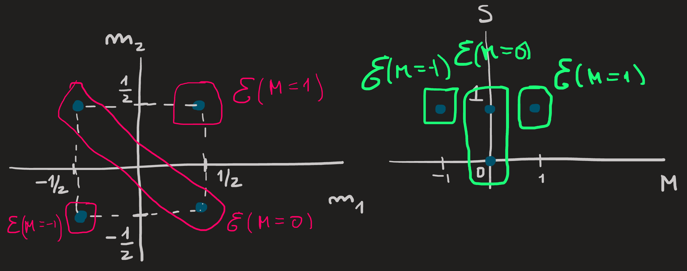
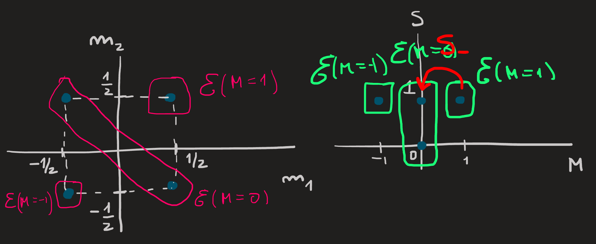

Angular Momentum in QM
The importance of angular momentum in CM
Falar da estrutura math: Hamiltoniano->(x,p)->L->Leis conservação
Two examples:
Angular momentum of a planet orbiting the sun
Angular momentum of a planet orbiting on its axis
What is angular momentum in QM?
Falar/referenciar a estrutura math: Hamiltoniano->Algebra->pdf->momentos (Intro cohen + algebra)
Two examples:
Angular momentum of electron around a nucleus
Spin angular momentum of an electron
Angular momentum in QM
Classical angular momentum is defined as \[ \mathbf{L}=\mathbf{r}\times \mathbf{p} \]
where for example, the last component of \(\mathbf{L}\) is \[ L_z=xp_y-p_yx. \]To obtain the QM angular momentum we replace the positions coordinates \(x,y,z\) and momentum \(p_x,p_y,p_z\) by the operators \(X,Y,Z\) and \(P_x,P_y,P_z\). This gives us:
\[ \mathbf{L}=\mathbf{R}\times \mathbf{P} \]where \(\mathbf{R}=(X,Y,Z)\) and \(\mathbf{P}=(P_x,P_y,P_z)\) are vectors whose entries are operators. From the three components of \(\mathbf{L}\) we can derive the following commutations relations:
\[ [L_x,L_y]=i\hbar L_z\qquad [L_y,L_z]=i\hbar L_x\qquad [L_z,L_x]=i\hbar L_y\qquad [L_i,L_j]=0\quad \text{for}\ i\not= j \]
from the canonical ones:
\[ [X,P_x]=i\hbar \qquad [Y,P_y]=i\hbar \qquad [Z,P_z]=i\hbar \]
From a different perspective we can say that the angular momentum operators satisfy these three commutation “equations”. In QM one wants to talk about more general angular momentum, for example spin angular momentum, it has no classical analog and hence is not defined explicitly as \(\mathbf{r}\times \mathbf{p}\). However one can still define it implicitly, by saying that whatever spin angular momentum operator is, it must satisfy the previous three commutations relation. Hence we introduce a general angular momentum \(J\) which obeys the rules
\[ [J_x,J_y]=i\hbar J_z\qquad [J_y,J_z]=i\hbar J_x\qquad [J_z,J_x]=i\hbar J_y\qquad [J_i,J_j]=0\quad \text{for}\ i\not= j \tag{1}\]
\(\mathbf{J}\) can be either the orbital angular momentum of a particle or the spin angular momentum or a combination of these, since all quantum angular momenta has commutation relations of that form. Given \(\mathbf{J}\) we can introduce now its norm squared \(J^2\), defined as:
\[ J^2=J_x^2+J_y^2+J_z^2 \]
Moreover, we can easily show from Equation 1 that this operator commute with the three components of \(\mathbf{J}\):
\[ [J^2,J_x]=0\qquad[J^2,J_y]=0\qquad[J^2,J_z]=0 \tag{2}\]
for example, using Equation 1 we find:
\[ \begin{align} [J^2,J_z]&=[J_x^2+J_y^2+J_z^2,J_z]\\ &=[J_x^2,J_z]+[J_y^2,J_z]+[J_z^2,J_z]\\ &=0+0+0\\ &=0 \end{align} \]
That fact that \(J^2\) commutes with \(J_z\) will be of great importance, because it guarantees one can find (and thus define) a set of basis kets in the Hilbert space that are simultaneously eigenstates of both. Moreover, since the commuting operators are hermitian (we say in QM they are observables) the eigenstates of the operators can be made orthogonal and the eigenvalues are real.
Goal
Define a basis of eigenstates common to \(J^2\) and \(J_z\) for our Hilbert Space.
Why?
One of the most important goals in QM is to find the eigenstates of the Hamiltonian of the system, paraphrased differently, we say, we want to find the basis of eigenstates of \(H\). Imagine we have an Hamiltonian which commutes with \(J^2\) and \(J_z\), then we know we can find a basis of eigenstates common to the three operators. Knowing already what is the eigenbasis common to \(\{J^2,J_z\}\) greatly facilitates finding the eigenstates of \(H\). The three operators (observables) constitute a complete set of commuting observables (CSCO) \[ \{H,J^2,J_z\} \] and we want to find its eigenbasis.
Raising and lowering operators
By definition we have: \[ J_+=J_x+iJ_y\qquad J_-=J_x-iJ_y\qquad. \] There are now plenty commutations relations we can derive from these two operators in conjunction with the \(J^2\) and \(J\), but the ultimate consequences of these relations is that they tell us how to organize the eigenbasis of \(\{J^2,J_z\}\), see next section and Figure 1 .
These definitions allow us to write:
\[ J_x = \frac{1}{2}(J_++J_-) \qquad J_y = \frac{1}{2i}(J_+-J_-), \tag{3}\]
which will be useful later.
Eigenvalues and eigenvectors
For any operator we can define its eigenvalues \(\lambda\) and eigenvectors \(|\psi\rangle\) in a generic manner as we did in basic linear algebra courses:
\[ J^2|\lambda\rangle = \lambda |\lambda\rangle\\ J_z|\lambda_z\rangle = \lambda_z |\lambda_z\rangle \tag{4}\]
In summary, skipping the proofs, what the commutation relations introduced above and the definition of raising and lowering operators allow us to do leads us to conclude that:
- The eigenvalues of \(J^2\) are of the form \(j(j+1)\hbar^2\) and those of \(J_z\) are \(m\hbar\) where \(j\) is a positive integer or semi-integer and \(-j\leq m\leq j\) in steps of \(1\).
- The corresponding eigenvectors can be labelled by the numbers \(j\) , \(m\) and \(n\). Instead of @eq_general_eval_evect we write:
\[ \begin{align}&J^2\ket{n,j,m}=j(j+1)\hbar^2\ket{n,j,m},\\&J_z\ket{n,j,m}=m\hbar\ket{n,j,m}.\end{align} \tag{5}\]
The only values that \(j\) can take are \(0\), \(1/2\), \(3/2\), \(2\), etc; while \(n\) can either be an integer or a continuous number that we use to label and thus distinguish the kets in the basis.
- For each \(n\), within \(\mathcal{E}(n,j)\) the operators \(J_\pm\) links each vector of the basis, specifically we have:
\[ J_\pm \ket{n,j,m}=\hbar \sqrt{j(j+1)-m(m\pm 1)}\ket{n,j,m\pm 1}, \tag{6}\]
a formula which is derived from commutation relations (through a rather complicated path). The names raising and lowering operators comes form the fact that \(m\) is either raised by \(+1\) or lowered by \(-1\) each time \(J_\pm\) acts.

Each blue dot in the picture corresponds to basis vector \(\ket{n,j,m}\), the horizontal boxes show subspaces \(\mathcal{E}(n,j)\) of the Hilbert space. From a different perspective we have:

From the first equation in Equation 5 we notice that for a given value of \(n\) and \(j\), for example \(n=1\) and \(j=1\), then \(\{|1,1,1\rangle,|1,1,0\rangle,|1,1,-1\rangle\}\) are eigenvectors of \(J^2\) with the same eigenvalue \(1(1+1)\hbar^2\) , we therefore say the eigenvalue is 3-degenate, or that the space \(\mathcal{E}(n=1,j=1)\) spanned by this basis is 3-degenerate. We distinguish the 3 eigenvectors by the \(J_z\) eigenvalue \(m\hbar\), or more simply by just the integer \(m\).
Subspaces of the Hilbert space can now be specified by fixing \(j\) and \(n\) for example, or by fixing \(m\) and \(n\) for various values. We know how its basis is then labelled and also how it is connected by the raising and lowering operators. With this information, we can compute how operators act in these subspaces, as an example see the next section.
The action of \(J^2\) and \(J_x\) in \(\mathcal{E}(n,j=1)\)
To compute the action we need first to specify a space (or subspace) and for that we have to specify its basis. For example, let us choose the subspace of eigenvectors of \(\{J^2,J_z\}\) with eigenvalue for a given \(n\) and \(l=1\):
\[ \mathcal{E}(n,j=1)=\text{span}\{|n,1,1\rangle,|n,1,0\rangle,|n,1,-1\rangle\} \]
see Figure 1 .
We drop the \(n\) index for easier read of the formulas. Later we will recover it.
We act with \(J_x\) on the basis of the chosen subspace. What is the output? Answer:
\[ \begin{align} J_x|1,1\rangle &= \frac{1}{2}(J_+ +J_-)|1,1\rangle\\ &=\frac{1}{2}J_+|1,1\rangle+\frac{1}{2}J_-|1,1\rangle\\ &=\frac{\hbar}{2}\sqrt{1(1+1)-1(1+1)}|1,2\rangle+\frac{\hbar}{2}\sqrt{1(1+1)-1(1-1)}|1,0\rangle\\ &=\frac{\hbar}{\sqrt{2}}|1,0\rangle \end{align} \tag{7}\]
We conclude that when \(J_x\) acts on the basis element \(|1,1\rangle\) it outputs \(|1,0\rangle\) times a constant, notice the input and output both live in \(\mathcal{E}(j=1)\). Let us see now what happens when \(J_x\) acts on the second basis ket \(|1,0\rangle\):
\[ \begin{align} J_x|1,0\rangle &= \frac{1}{2}(J_++J_-)|1,0\rangle\\ &=\frac{\hbar}{2}\sqrt{1(1+1)-0(0+1)}|1,1\rangle+\frac{\hbar}{2}\sqrt{1(1+1)-0(0-1)}|1,1\rangle|1,-1\rangle\\ &=\frac{\hbar}{\sqrt{2}}(|1,1\rangle+|1,-1\rangle) \end{align} \tag{8}\]
As \(J_x\) acts on \(|1,0\rangle\) it gives a linear combination \(|1,1\rangle+|1,-1\rangle\) of basis vectors, which in turn also lives in \(\mathcal{E}(j=1)\).
And finally,a similar calculation would shows the action on the third ket is:
\[ J_x|1,-1\rangle =\frac{\hbar}{\sqrt{2}}|1,0\rangle \tag{9}\]
Again, the input \(|1,-1\rangle\) is in \(\mathcal {E}(j=1)\) and so is the output \(|1,0\rangle\).
The calculation above show clearly that the the operator \(J_x\) maps the basis of \(\mathcal{E}(j=1)\) into vectors in that subspace. Therefore, in general it will map any ket of \(\mathcal{E}(j=1)\) into another in \(\mathcal{E}(j=1)\); the jargon for this observation is to say that “\(\mathcal{E}(j=1)\) is globally invariant under the action of \(J_x\)”; more colloquially we just say “the action of \(J_x\) is stuck in the subspace”. These calculation confirm the prediction already made from the fact that \([J^2,J_x]=0\).
The results in Equation 7, Equation 8 and Equation 9 allow us to write:
\[ J_x = \sum_{m,m'=1,0,-1}|1,m\rangle\langle1,m|J_x|1,m'\rangle\langle1,m'| \]
explicitly as (LINK PARA REPRE GEN Ops)
\[ \begin{align} J_x &= \frac{\hbar}{\sqrt{2}}\left(|1,0\rangle\langle 1,1|+|1,1\rangle\langle 1,0|+|1,-1\rangle\langle 1,0|+|1,0\rangle\langle 1,-1|\right) \end{align} \]
which in turn can be rewritten using using matrix notation. If we agree to order for the basis kets as \(\{|1,1\rangle, |10\rangle,|1,-1\rangle\}\) we find:

The action of \(J_y\) and \(J_z\) in \(\mathcal{E}(n,j=1)\)
Repeating these calculation for \(J_y\) and \(J_z\) yields the results:

The matrix for \(J_z\) is diagonal since the basis elements we choose fo \(\mathcal{E}(j=1)\) are its eigenvectors, the diagonal elements are the the three \(m\hbar\) eigenvalues for \(m=1,0,-1\); and since they are also eigenvectors of \(J^2\) we find a diagonal with the \(1(1+1)\hbar^2=2\hbar^2\) eigenvalues repeated three times:

All of above assume a given index \(n\) was chosen.
The action of \(J^2\) and \(J_x\), \(J_y\) and \(J_z\) in \(\mathcal{E}(n,j=1/2)\) (Spin angular momentum)
The intrinsic spin angular momentum of an electron is described by states living in the \(\mathcal{E}(j=1/2)\) subspace (see Figure 1), the basis for this subspace is (as usual) furnished by the simultaneous eigenvectors of the \(J^2\) and \(J_z\):
\[ \begin{align}&J^2\ket{1/2,m}=\frac{3}{4}\hbar^2\ket{1/2,m}\\&J_z\ket{1/2,m}=m\hbar\ket{1/2,m}\end{align} \tag{10}\]
where \(m=\pm 1/2\). Therefore we say
\[ \mathcal{E}(j=1/2)=\text{span} \{|1/2,1/2\rangle,|1/2,-1/2\rangle\} \]
Besides dropping the index \(n\) introduced in Equation 5,
given \(j=1/2\) is fixed it is usual to drop it as well and simply write \(|m\rangle\) where \(m=\pm1/2\).
we can rename \(m\) as \(m_s\) and reexpress is as \(m_s=\sigma/2\) with \(\sigma =\pm\) or \(\sigma=\uparrow,\downarrow\), but for the present notes we’ll keep the \(m_s\) notation.
Because the \(j=1/2\) angular momentum states are very important (they are the states that describe electrons for example) we rename them into spin angular momentum and to emphasize that we use the notation \(\{S^2,S_z\}\) for the \(\{J^2,J_z\}\) that act strikli in \(\mathcal{E}(j=1/2)\). Instead of Equation 10 we should write:
\[ \begin{align}&S^2\ket{m_s}=\frac{3}{4}\hbar^2\ket{m_s}\\&S_z\ket{m_s}=m_s\hbar\ket{m_s}\end{align} \]
The basis states \(|m_s\rangle\) are connect by the raising \(S_+\) and lowereing operator \(S_-\) we seen in Equation 6, adapting to the present electron basis states we have:
\[ S_+\ket{-1/2}=\hbar\sqrt{1/2(1/2+1)-1/2(1/2+1)}\ket{1/2}=\hbar\sqrt{2}/2\ket{1/2} \tag{11}\]
We can see that the basis states in \(\mathcal{E}(1/2)\) can be mapped into each other by acting with \(S_\pm\).
The raising and lowering operators are important for another reason, they tell us how \(S_x\) and \(S_y\) act on the eigenbasis of \(\{S^2,S_z\}\), from their definition we have:
\[ S_x=\frac{1}{2}(J_++J_-) \qquad S_y=\frac{1}{2i}(J_+-J_-) \tag{12}\]
In order to know how \(S_x\) and \(S_y\) act on this basis requires first to reexpress these operators in terms of operator we know how they act in this basis, the formulas Equation 12 together with Equation 11 do precisely that.
A similar calculation to Equation 7 can now be performed which would show that their action is stuck in the \(\mathcal{E}(j=1/2)\), after all they both commute with \(S^2\) operator and thus \(j=1/2\) must be preserved.
Matrix Representation
By knowing how an operator acts on a basis we know how obtain its matrix representation, for example, lets take a look at \(S_z\) and then \(S_x\) and \(S_y\). We can write the action of \(S_z\) on the basis \(\{\ket{1/2},\ket{-1/2}\}\) as:
\[ \begin{align}&S_z\ket{1/2}=\frac{\hbar}{2}\ket{1/2}+0\ket{-1/2}\\&S_z\ket{-1/2}=0\ket{1/2}+\frac{\hbar}{2}\ket{-1/2}\end{align} \]
From this result we can get the numbers \(\braket{m|S_z|m'}\). We can exhibit all these numbers as a matrix:
\[ [S_z]=\frac{\hbar}{2}\begin{pmatrix}1 & 0\\0 & -1\end{pmatrix} \]
Getting the matrices for \(S_x\) and \(S_y\) in the eigenbasis \(\{\ket{-1/2},\ket{1/2}\}\), we write them in terms of the raising and lowering operators. After calculations analogous to Equation 7, the numbers \(\braket{m|S_x|m'}\) and \(\braket{m|S_y|m'}\) can be arranged into the matrices:
\[ [S_x]=\frac{\hbar}{2}\begin{pmatrix}0 & 1\\1 & 0\end{pmatrix}\qquad[S_y]=\frac{\hbar}{2}\begin{pmatrix}0 & -i\\i & 0\end{pmatrix} \]
Spin quantum states of a system with two electrons
Consider two electrons each in its own isolated system and their spin properties described by the eigenstates of \(\{S_1^2,S_{1z}\}\) and \(\{S_2^2,S_{2z}\}\):
\[ \begin{align}&S_1^2\ket{m_1}=\frac{3}{4}\hbar^2\ket{m_1}\\&S_{1z}\ket{m_1}=m_1\hbar\ket{m_1}\\&S_2^2\ket{m_2}=\frac{3}{4}\hbar^2\ket{m_2}\\&S_{2z}\ket{m_2}=m_2\hbar\ket{m_2}\end{align} \]
The spins magnitude of the two electrons is described by the quantum numbers
\[ s_1=\frac{1}{2}\qquad s_2=\frac{1}{2} \]
The quantum states of the two isolated systems are the states living in a state space whose basis is formed from the tensor product \(\ket{m_1}\otimes \ket{m_2}\) of the individual eigenstates:
\[ \text{span}\{\ket{m_1}\otimes \ket{m_2}\,\,|\,\,m,m_2=\pm1/2\} \]
Two isolated systems each with one electron is equivalent to a single system with two non-interacting electrons.
It is important to understand that:
- The observables \(S^2_1\) ,\(S_{1z}\) act on the space spanned by \(\{\ket{-1/2_1},\ket{1/2_1}\}\) while the observables \(S^2_2\), \(S_{2z}\) act on \(\{\ket{-1/2_2},\ket{1/2_2}\}\) and do not act on tensor product states.
- We define however the extensions of \(S^2_1\), \(S_{1z}\), which act on the tensor product space as
\[ \tilde{S}_1^2=S_1^2\otimes 1_2\qquad \tilde{S}_{1z}=S_{1z}\otimes 1_2 \]
The extensions of \(S^2_2\) ,\(S_{2z}\) are defined analogously:
\[ \tilde{S}_2^2=1_1 \otimes S_2^2\qquad \tilde{S}_{2z}=1_1\otimes S_{2z} \]
Therefore we have:
\[ \begin{align}\tilde{S}_1^2(\ket{m_1}\otimes \ket{m_2}) &= (S_1^2\ket{m_1})\otimes \ket{m_2}\\&=(\frac{3\hbar}{4}\ket{m_1})\otimes \ket{m_2}\\&=\frac{3\hbar}{4}\ket{m_1}\otimes \ket{m_2}\end{align} \tag{13}\]
Similarly for the remainder operators.
(ESTA COMPARAÇÃO TEM DE SER APROFUNDADA)
Also, the set of operators \(\{\tilde{S}_1^2,\tilde{S}_{1z},\tilde{S}_2^2,\tilde{S}_{2z}\}\) commute and as a result we know it exists a basis of common eigenstates which we label by the eigenvalues, we define them as \(\ket{m_1,m_2}\). In mathematical terms we have:
\[ \begin{align}&\tilde{S}_1^2\ket{m_1,m_2}=\tilde{S}_2^2\ket{m_1,m_2}=\frac{3}{4}\hbar\ket{m_1,m_2}\\&\tilde{S}_{1z}\ket{m_1,m_2}=m_1 \hbar\ket{m_1,m_2}\\&\tilde{S}_{2z}\ket{m_1,m_2}=m_2 \hbar\ket{m_1,m_2}\\\end{align} \tag{14}\]
Comparing Equation 13 and the first equation in Equation 14 we are forced to conclude that \(\ket{m_1,m_2}\) are the tensor product of the eigenstates of the individual electron spins:
\[ \ket{m_1,m_2}:=\ket{m_1}\otimes\ket{m_2} \]
If we were unaware of the kets \(|m_1\rangle \otimes |m_2\rangle\) and ?@eq-setill, we would only know the eigenbasis is labelled by the eigenvalues and, just as stated in Equation 14.
Note how we suppressed the \(j_1=j_2=1/2\) that label the \(\tilde{S}_{1,2}^2\) eigenvalues for simplicity. As a further simplification of notation we’ll from now on omit the ~ in\(\tilde{S}_{1,2}^2\) and \(\tilde{S}_{z1,2}\), it is left to the reader that these operators are extensions into tensor product spaces.
In conclusion, the spin properties of a system with two particles (electrons) whose spin state is described by kets in \(\mathcal{E}_1(j_1=1/2)\) and \(\mathcal{E}_2(j_2=1/2)\) is described by a state of the form
\[ \ket{m_1,m_2}:=\ket{m_1}\otimes\ket{m_2}\qquad m_{1,2}=\pm1/2 \]
which constitute a basis for the tensor product state space
\[ \mathcal{E}_{12}=\mathcal{E}_1\otimes\mathcal{E}_2 \]
A pictorial organization of our basis states if given as follows:

A new basis for the tensor state space
We want for the space \(\mathcal{E}_{12}(j_1=1/2,j_2=1/2)\) a basis of kets which are simultaneous eigenvalues of the following set of observables: \[ \{S_1^2,S_2^2,S^2,S_z\} \] where \(\mathbf{S}=\mathbf{S}_1+\mathbf{S}_2=(S_{1x}+S_{2x},S_{1y}+S_{2y},S_{1z}+S_{2z})\), the magnitude squared operator is \(S^2=S_x^2+S_y^2+S_z^2\) and z-component \(S_z=S_{1z}+S_{2z}\).
Why?
The Hamiltonian we got in our hands might commute with these observables rather than the old ones. Our goal is still to diagonalize \(H\). (terminar estar notas realmente diagonalizando Hamiltnonianos)
The new basis
Since \(\{S_1^2,S_2^2,S^2,S_z\}\) is a CSCO, we can define a basis of kets which are eigenvector of all these observables; the basis is labelled by the eigenvalues WHY???!!! (or better yet, by the indices that label the eigenvalues): \[ \begin{align} &S_1^2\ket{j_1,j_2;S,M}=S^2_2\ket{j_1,j_2;S,M}=\frac{3}{4} \hbar^2\ket{S,M}\\ &S^2\ket{j_1,j_2;S,M}=S(S+1)\hbar^2\ket{j_1,j_2;S,M}\\ &S_z\ket{j_1,j_2;S,M}=M\hbar\ket{j_1,j_2;S,M} \end{align} \]where \(j_1=j_2=1/2\). Notice that \(S^2\) and \(S_z\) are angular momentum operators because they result of adding angular momentum, thus they are just another particular case of \(J^2\) and \(J_z\) we defined previously, as a result their eigenvalues are of the form \(j(j+1)\hbar^2\) and \(m\hbar\) with \(-j\leq m\leq j\), which for the present case we write under new symbols as \(S(S+1)\hbar^2\) and \(M\hbar\) with \(-S\leq M\leq S\).
What are the values of \(S\) and \(M\)?
We still do not know what values \(S\) and \(M\) take. But two thing we know:
From the theory of general angular momentum introduced above, we find \(-S\leq M\leq S\).
Knowing that \(S_z=S_{1z} + S_{2z}\) tell us how to act with \(S_z\) on the old basis \(\{\ket{1/2,1/2},\ket{-1/2,1/2},\ket{1/2,-1/2},\ket{-1/2,-1/2}\}\), that suffices to show what values \(M\) take. Let us act with \(S_z\) on each ket of this basis. \[ S_z\ket{m_1,m_2}=(S_{1z}+S_{2z})\ket{m_1,m_2}=(m_1+m_2)\hbar \ket{m_1,m_2} \]
From this we conclude that \[ M=m_1+m_2 \] The values \(M\) can take are: \[ M\in\{-1,0,+1\} \] Now, what values \(S\) need to take that guarantee that \(M\) takes these values? Notice the question: If I know \(S\), I can easily get the range of \(M\) because I know that \(-S\leq M\leq M\). The present question goes the other way, if I know the \(M\)’s, what \(S\)’s are possible. We can answer this question by constructing a diagram similar to the one done before:

We can clearly see that \(S=0,1\). A closer inspection reveals that the following condition holds in general: \[ |j_1-j_2|\leq S\leq j_1+j_2 \] This diagram not only showed us what is \(S\), it also organizes pictorially the basis \(\{\ket{1/2,1/2;S,M}\}\) generated by the CSCO. In it is also shown two subspaces where the raising and lowering operators \(S_\pm\) act. We will drop the \(j_1=j_2=1/2\) from the ket notation since it is clear from context and write just \(\ket{S,M}\).
Relating the two basis
We want to express the kets \(\ket{S,M}\) of the new basis in terms of \(\ket{m_1,m_2}\) that constitute the old basis, to do that we argue pictorially:

On the left side of the picture we see a graphical organization of the old basis and on the right side the new basis. We identify in each basis, the elements that span the subspaces \(\mathcal{E}(M)\) for each \(M\); this is easily done on the right picture because the horizontal axis already tells us the \(M\)’s, on the left picture we need to recall that each basis ket is an eigenvector of \(S_z\) with eigenvalue \(M\hbar=(m_1+m_2)\hbar\). Careful inspection of these subspaces shows us that: \[ \begin{align} &\ket{S=1,M=1}\in \mathcal{E}(M=1)\\ &\ket{m_1=1/2,m_2=1/2}\in \mathcal{E}(M=1) \end{align} \] and since the subspace is one-dimensional, these two basis kets must coincide. We write: \[ \ket{1,1}=\ket{1/2,1/2} \] We just succeeded in establishing the first connection of both basis, more, the remaining connections follow from this one, as falling dominos. Using the lower operator defined as \(S_-:=S_{1-}+S_{2-}\) we find \(\ket{1,0}\):

\[ S_-\ket{1,1}=(S_{1-}+S_{2-})\ket{1/2,1/2} \]
The left hand side gives us: \[ \hbar\sqrt{1(1+1)-0(0-1)}\ket{1,0} \] The right hand side is: \[ \hbar\sqrt{\frac{1}{2}\left(\frac{1}{2}+1\right)-\frac{1}{2}\left(\frac{1}{2}-1\right)}\left(\ket{-\frac{1}{2},\frac{1}{2}}+\ket{\frac{1}{2},-\frac{1}{2}}\right) \] Thus: \[ \hbar\sqrt{2}\ket{1,0}=\hbar\left(\ket{-\frac{1}{2},\frac{1}{2}}+\ket{\frac{1}{2},-\frac{1}{2}}\right) \] Which yields: \[ \ket{1,0}=\frac{1}{\sqrt{2}}\left(\ket{-\frac{1}{2},\frac{1}{2}}+\ket{\frac{1}{2},-\frac{1}{2}}\right) \] In \(\mathcal{E}(M=1)\) there is still \(\ket{0,0}\), we use its properties to derive the connection:
We know it is a linear combination of \(\ket{-1/2,1/2}\) and \(\ket{1/2,-1/2}\) thus we write: \[ \ket{0,0}=c_1\ket{-1/2,1/2}+c_2\ket{1/2,-1/2} \] for some complex numbers \(c_{1,2}\).
We know it is orthogonal to \(\ket{1,0}\), thus we write: \[ 0=\braket{1,0|0,0}=\frac{1}{\sqrt{2}}(c_1+c_2) \]
We also know it is normalized, i.e., \[ 1=\braket{0,0|0,0}=|c_1|^2+|c_2|^2 \]
Solving these equations we conclude one possible solution is: \[ c_1=-c_2=\frac{1}{\sqrt{2}} \] Hence, the second basis vector in \(\mathcal{E}(M=0)\) is: \[ \ket{0,0}=\frac{1}{\sqrt{2}}\left(\ket{-\frac{1}{2},\frac{1}{2}}-\ket{\frac{1}{2},-\frac{1}{2}}\right) \] Finally, to get the last connection between the new and old basis, we act with either \(S_-\) on \(\ket{1,0}\):

Or we simply notice that \(\mathcal{E}(M=-1)\) is also one dimensional and therefore: \[ \ket{1,-1}=\ket{-1/2,-1/2} \]
Summary
The connection between the basis \(\{\ket{S,M}\}\) of eigenstates of the CSCO \(\{S_1^2,S_2^2;S^2,S_z\}\) and the basis \(\{\ket{m_1,m_2}\}\) of eigenstates of the CSCO \(\{S_1^2,S_{1z},S^2_2,S_{2z}\}\) given \(S_1=S_2=1/2\) is: \[ \ket{0,0}=\frac{1}{\sqrt{2}}\left(\ket{-\frac{1}{2},\frac{1}{2}}-\ket{\frac{1}{2},-\frac{1}{2}}\right) \] which spans the one dimension subspace \(\mathcal{E}(S=0)\) and is thus called a singlet state; the three states of \(\mathcal{E}(S=1)\) are called a triplet \[ \begin{align} &\ket{1,1}=\ket{1/2,1/2}\\ &\ket{1,0}=\frac{1}{\sqrt{2}}\left(\ket{-\frac{1}{2},\frac{1}{2}}+\ket{\frac{1}{2},-\frac{1}{2}}\right)\\ &\ket{1,-1}=\ket{-1/2,-1/2} \end{align} \]

The Orbital Angular Momentum
(DESCRIBES THE INTEGER \(j\)’s)
So far we described the framework of a generic angular momentum, which followed solely from its commutation relations; we want now to see a particular example of the \(J^2\) and \(J_z\) operators, namely, when they are the magnitude-squared of the orbital angular momentum of a particle and its z-component, to be explicit, let:
\[ S_-\ket{1/2}=\hbar\sqrt{1/2(1/2+1)-1/2(1/2-1)}\ket{-1/2}=\hbar\ket{-1/2} \]
which can then be normalized by dividing it \(\hbar\). On the other hand we have:
\[ \begin{align} &J_x := YP_z-ZP_y\\ &J_y:=ZP_x-XP_z\\ &J_z:= XP_y-YP_x \\ &J^2:=J_x^2+J_y^2+J_z^2 \end{align} \tag{15}\]
The commutation relations Equation 1 and Equation 2 that we assumed in previous sections for the symbols on the lhs of Equation 15 also hold for the symbols on the rhs
In other words, the explicit form of \(J_x\), \(J_y\) and \(J_z\) that we defined in Equation 15, by itself satisfies Equation 1 and Equation 2 provided:
\[ [X,P_x] = [Y,P_y] = [Z,P_z]=i\hbar \]
As an example:
\[ \begin{align} [J_x,J_y]&=[YP_z-ZP_y,ZP_x-XP_z]\\ &=[YP_z,ZP_x]-[YP_z,XP_z]-[ZP_y,ZP_x]+[ZP_y,XP_z]\\ &=Y[P_z,Z]P_x -0-0+X[Z,P_z]P_y\\ &=-i\hbar YP_x+i\hbar XP_y\\ &=i\hbar (XP_y-YP_x)\\ &=i\hbar J_z \end{align} \tag{16}\]
just as we assumed in Equation 1 . Analogous calculation show our definitions satisfies the remaining commutation relations
It is traditional to use the symbols \(L_x\), \(L_y\) ,\(L_z\) and \(L^2\) in place of \(J_x\), \(J_y\) ,\(J_z\) and \(J^2\) when speaking about the orbital angular momentum. Recall the former notation is used for a generic angular momentum, not necessarily the orbital one.
The rhs of Equation 15 together with the choice of the position basis \(\{|x,y,z\rangle\}\) allow us to give the position representation of the eigenvalue-eigenvector equations we saw in Equation 5:
\[ \begin{align} &\langle x,y,z|L^2\ket{l,m}=l(l+1)\hbar^2\langle x,y,z|\ket{l,m}\\ &\langle x,y,z|L_z\ket{l,m}=m\hbar\langle x,y,z|\ket{l,m} \end{align} \tag{17}\]
Substituting Equation 15 we find:
\[ \begin{align}&\langle x,y,z|(L_x^2+L_y^2+L_z^2)\ket{l,m}=l(l+1)\hbar^2\langle x,y,z|\ket{l,m}\\ &\langle x,y,z|(XP_y-YP_x)\ket{l,m}=m\hbar\langle x,y,z|\ket{l,m}\end{align} \tag{18}\]
The \(X\) and \(P_x\) operators have the following representation in the \(\{|x\rangle\}\) basis:
\[ \langle x|X|\psi\rangle = x\langle x|\psi\rangle \qquad \langle x|P_x|\psi\rangle = \frac{\hbar}{i}\frac{\partial}{\partial x}\langle x|\psi\rangle \]
The second equation in Equation 18 we find:
\[ \begin{align} \langle x,y,z|L_z|\psi\rangle &= \langle x,y,z|(XP_y-YP_x)|\psi\rangle\\ &= \langle x,y,z|(xP_y-yP_x)|\psi\rangle\\ &= \langle x,y,z|(x\frac{\hbar}{i}\frac{\partial}{\partial y}-y\frac{\hbar}{i}\frac{\partial}{\partial x})|\psi\rangle\\ &= \frac{\hbar}{i}\left(x\frac{\partial}{\partial y}-y\frac{\partial}{\partial x}\right)\langle x,y,z|\psi\rangle\\ &= \frac{\hbar}{i}\left(x\frac{\partial}{\partial y}-y\frac{\partial}{\partial x}\right)\psi(x,y,z) \end{align} \] Therefore, in the position basis, the \(L_z\) operator acts on functions \(\psi(x,y,z)\) as the operation:
\[ L_z \rightsquigarrow \frac{\hbar}{i}\left(x\frac{\partial}{\partial y}-y\frac{\partial}{\partial x}\right) \tag{19}\]
Similarly we find:
\[ L_x \rightsquigarrow \frac{\hbar}{i}\left(y\frac{\partial}{\partial z}-z\frac{\partial}{\partial y}\right) \qquad L_y \rightsquigarrow \frac{\hbar}{i}\left(z\frac{\partial}{\partial x}-x\frac{\partial}{\partial z}\right) \tag{20}\]
We could substitute the rhs of Equation 19 and Equation 20 into the commutation relations and run an analogous calculation to Equation 16, the would conclude that they indeed satisfy those equations as well.
It will be useful to change from cartesian coordinates \(x,y,z\) into polar coordinates \(r,\theta,\phi\). The map between these coordinates is established by the equations:
\[ \begin{align} & x = r \sin \theta \cos \phi\\ & y = r \sin \theta \sin \phi\\ & z = r \cos \theta \end{align} \]
provided \(r\geq 0\), \(0\leq\theta\leq\pi\) and \(0\leq\phi< 2\pi\)
To convert Equation 19 and Equation 20 into polar coordinates we proceed as follows:
- Draw a diagram:

- Relate the derivatives in cartesian and polar coordinates encoded in the diagram:
\[ \begin{pmatrix} \partial_r\psi\\ \partial_\theta\psi\\ \partial_\phi\psi \end{pmatrix} = \begin{pmatrix} \partial_r x & \partial_r y & \partial_r z\\ \partial_\theta x & \partial_\theta y & \partial_\theta z\\ \partial_\phi x & \partial_\phi y & \partial_\phi z \end{pmatrix} \begin{pmatrix} \partial_x\psi\\ \partial_y \psi\\ \partial_z \psi \end{pmatrix} \tag{21}\]
- Compute the matrix (Easy)
\[ \begin{pmatrix} \sin\theta \cos\phi & \sin\theta \sin \phi & \cos\theta\\ r \cos\theta \cos\phi & r \cos\theta \sin \phi & -r \sin \theta\\ -r\sin\theta \sin \phi & r \sin\theta \cos\phi & 0 \end{pmatrix} \]
- Invert the system Equation 21 (Hard, use Mathematica)
\[ \begin{pmatrix} \partial_x\psi\\ \partial_y\psi\\ \partial_z\psi \end{pmatrix} = \begin{pmatrix} \sin\theta \cos \phi & r^{-1}\cos\theta \cos\phi & -(r\sin\theta)^{-1} \sin\phi\\ \sin\theta \sin \phi & r^{-1}\cos\theta \sin\phi & (r\sin\theta)^{-1} \cos\phi\\ \cos\theta & -r^{-1}\sin\theta & 0 \end{pmatrix} \begin{pmatrix} \partial_r\psi\\ \partial_\theta \psi\\ \partial_\phi \psi \end{pmatrix} \]
Substitute the results into Equation 19 and Equation 20 and simplify gives:
\[ \begin{align} &L_x \rightsquigarrow i\hbar\left(\sin\phi \frac{\partial}{\partial \theta}+\frac{\cos\phi}{\tan\theta} \frac{\partial}{\partial \phi}\right)\\ &L_y \rightsquigarrow i\hbar\left(-\cos\phi \frac{\partial}{\partial \theta}+\frac{\sin\phi}{\tan\theta} \frac{\partial}{\partial \phi}\right)\\ &Lz \rightsquigarrow \frac{\hbar}{i} \frac{\partial}{\partial \phi} \end{align} \]
From these results we can now derive the action of \(L^2\) in polar coordinates:
\[ \begin{align} L^2\psi &= L_x^2\psi + L_y^2\psi+L_z^2\psi\\ &=(i\hbar)^2\left(\sin\phi \frac{\partial}{\partial \theta}+\frac{\cos\phi}{\tan\theta} \frac{\partial}{\partial \phi}\right)^2\psi +(i\hbar)^2\left(-\cos\phi \frac{\partial}{\partial \theta}+\frac{\sin\phi}{\tan\theta} \frac{\partial}{\partial \phi}\right)^2\psi+ \left(\frac{\hbar}{i}\right)^2 \frac{\partial^2}{\partial \phi^2}\psi \end{align} \tag{22}\] Now we need to expand each square, the first becomes:
\[ (i\hbar)^2\left(\sin^2\phi \frac{\partial^2\psi}{\partial \theta^2}+ \frac{\cos^2\phi}{\tan^2\theta}\frac{\partial^2\psi}{\partial \phi^2}-\frac{\sin\phi\cos\phi}{\sin^2\theta}\frac{\partial \psi}{\partial \phi}+\frac{\sin\phi\cos\phi}{\tan\theta}\frac{\partial^2 \psi}{\partial\theta\partial \phi}\right) \]
the second term becomes:
\[ (i\hbar)^2\left(\cos^2\phi \frac{\partial^2\psi}{\partial \theta^2}+ \frac{\sin^2\phi}{\tan^2\theta}\frac{\partial^2\psi}{\partial \phi^2}+\frac{\cos\phi\sin\phi}{\sin^2\theta}\frac{\partial \psi}{\partial \phi}-\frac{\cos\phi\sin\phi}{\tan\theta}\frac{\partial^2 \psi}{\partial\theta\partial \phi}\right) \]
Substituting into Equation 22 and canceling terms yields the final result:
\[ L^2 \rightsquigarrow -\hbar^2\left(\frac{\partial^2}{\partial \theta^2} + \frac{1}{\sin^2\theta} \frac{\partial^2}{\partial \phi^2} + \frac{1}{\tan\theta}\frac{\partial}{\partial \theta}\right) \tag{23}\]
As a consequence, the system of equations in Equation 18 becomes a system of partial differential equations:
\[ \begin{align} &-\hbar^2 \left(\frac{\partial}{\partial \theta^2}+\frac{1}{\tan \theta} \frac{\partial}{\partial \theta}+\frac{1}{\sin^2\theta}\frac{\partial}{\partial^2 \phi^2}\right)\psi_{l,m}(r, \theta, \phi)=l(l+1)\hbar^2\psi_{l,m}(r, \theta, \phi)\\ & \frac{\hbar}{i} \frac{\partial}{\partial \phi}\psi_{l,m}(r, \theta, \phi)=m\hbar \psi_{l,m}(r, \theta, \phi) \end{align} \tag{24}\]
The solutions \(\psi_{l,m}(r,\theta,\phi)\) are the eigenfunctions common to the \(L^2\) and \(L_z\) operators associated with the eigenvalues \(l(l+1)\hbar^2\) and \(m\hbar\). These solution exist because these two operators commute. Our ultimate goal is to solve them, but in these notes we’ll content ourselves by just identifying some of its properties.